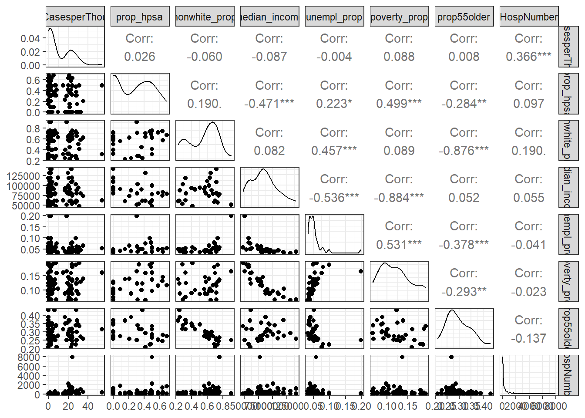

Exploration of Multicollinearity
In social science and health data, multicollinearity has complex causes and is generally unavoidable. There are a few notable instances of collinearity within the regression predictors. The non-white racial population proportion and the population proportion aged 55 years and older can be reliably predicted from the rest of the data, and certain pairs, such as poverty and unemployment, show evidence of an intuitively strong linear association. While the cause of these co-correlations is outside of the scope of our analysis, we chose to explore two regression methods, LASSO and random forest, which use shrinkage or bagging to reduce the variance in the prediction while allowing for unbiased searches across the predictors.
LASSO Regression
The goal of this regression is to determine whether deaths per 1000 individuals due to heart disease can be predicted given demographic information, as well as information about the hospitals located within counties in California, controlling for the cases within a county. We employed a 10-fold LASSO regression to determine predictors with non-zero associations with the outcome, controlling for heart disease cases and with a shrinkage penalty applied to lower variance.
| Min | X1se | |
|---|---|---|
| (Intercept) | -0.0936 | 0.0567 |
| RatingBetter | 0.0000 | 0.0000 |
| RatingWorse | 0.0000 | 0.0000 |
| CasesperThou | 0.0328 | 0.0271 |
| prop_hpsa | 0.0000 | 0.0000 |
| nonwhite_prop | 0.0000 | 0.0000 |
| median_income | 0.0000 | 0.0000 |
| unempl_prop | 0.0000 | 0.0000 |
| poverty_prop | 0.0000 | 0.0000 |
| prop55older | 0.4513 | 0.0000 |
| HospNumber | -0.0001 | 0.0000 |
| RatingBetter:CasesperThou | -0.0185 | 0.0000 |
| RatingWorse:CasesperThou | 0.0160 | 0.0000 |
| RatingBetter:prop55older | -0.0587 | 0.0000 |
| RatingWorse:prop55older | 0.0000 | 0.0000 |
| RatingBetter:HospNumber | 0.0000 | 0.0000 |
| RatingWorse:HospNumber | 0.0000 | 0.0000 |
| Model | Prediction MSE |
|---|---|
| lambda 1se | 0.0479827 |
| lambda min | 0.0150106 |
The prediction MSE for the lambda 1se model, which had only one significant predictor, is 0.04798, while the prediction MSE for the lambda min model with seven predictors is 0.01501. The sole predictor in the first model was the heart disease case rate, and the difference in prediction error between the two models is a fairly large 68.72%. It is clear that these variables are lending predictive power to the model, but not enough to significantly outweigh a stronger L1 penalty imposed by LASSO.
In the lambda min model, we find that additional predictors of deaths due to heart disease include the median income, hospital rating, number of hospitals in the county at that rating level, and proportion of residents 55 years old and older. This agrees with common sense: we can imagine that the overall rate of deaths due to heart disease in a given area is due to demographic effects on the health of the general population and economic effects impeding treatment.
We also find that the rating of a hospital on its own has no statistically significant effect on heart attack deaths until it interacts with the number of heart attack cases. In general, subgroups of hospitals rated “Worse” tended to have higher deaths, while deaths were expected to decrease overall for hospitals with “Better” ratings with cases remaining the same. LASSO demonstrates that, given these data, there is a trade-off between model simplicity and prediction power, and more realistic models tend to employ more demographic and hospital-level variables.